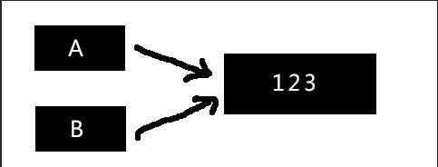
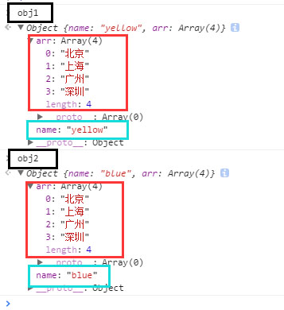

深拷贝&浅拷贝，说起来都明白，但是说不出所以然。今天就系统的整理下思绪，一点点的将其分析出所以然
废话不多说
浅拷贝
简单的说就是一个值引用，学生时代接触过编程的人都应该了解过指针，浅拷贝可以说就是变量拷贝的是数据的地址而不是数据本身，所以从直观上看来，好像是一个数据改变了， 所有数据都改变了
1 | var obj1 = { |

通过浅拷贝 A 和 B 指向相同的内存地址，通过 A （或 B）对数据进行修改，相应的在 B （或 A）可以得到体现
那么就 JavaScript 中来说，浅拷贝一般是指数组对象的浅拷贝，因为基本数据类型的赋值都是值传递（所以深拷贝都是一层一层的拨开对象或数组，直到基本数据类型然后进行赋值拷贝，完成）1
2
3
4
5
6
7
8
9
10
11
12
13
14
15
16function copy(obj) {
var cc = {};
for(var i in obj) {
cc[i] = obj[i];
}
return cc;
}
var obj1 = {
name: "yellow",
arr: ["北京", "上海", "广州"]
}
var obj2 = copy(obj1);
obj2.name = "blue";
obj2.arr.push("深圳");
此时，对象 obj1 和 obj2 的如下图所示， 可以看到属性 name 的值是不一样的，但是属性 arr 由于是一个数组，两个对象里都多了一个“深圳”，因为他们都是一个值引用， 两个对象里的arr 指向同一块内存地址，所以通过其中一个改变其值，另一个的值也会跟着改变。这是一个非常常见的一个浅拷贝的例子。

到这里，我们可以总结一下：浅拷贝，对于基本数据类型是值传递，而对于引用类型（对象等）是进行的引用传递。
深拷贝
深拷贝，从字面看，就是比浅深一点。
深拷贝与浅拷贝从我们看得到的地方来说，区别就是：深拷贝之后，两个值的变化互不影响
怎样达到这个目的呢？就是在拷贝的时候，是把值传递出去，还不是单纯的指向值的位置，就像上边的 name 值一样。
可以对比下上边两段代码的 str 属性和 name 属性，发现了什么么。在第一段代码中 str 属性是放在对象 obj1 里边进行的赋值，是以对象 obj1 为单位的，第二段代码中，name 属性是以name 属性本身为单位的赋值，name 本身是一个字符串类型（基本数据类型），所以进行的是值传递。
所以， 如果在进行赋值拷贝时，如果一个值是引用类型（对象）， 那么就“刨”一层，直到遇到基本数据类型，然后进行赋值。从而使整个拷贝都是基于基本数据类型进行的，最终达到我们深拷贝的结果
上一段简单的深拷贝示例代码1
2
3
4
5
6
7
8
9
10
11
12
13
14
15
16function deepCopy(obj) {
if(typeof obj !== "object" && obj === null) {
return;
} else {
var cc = obj.constructor === Array?[]:{};
}
for(var i in obj) {
if(typeof obj[i] === "object") {
cc[i] = deepCopy(obj[i]);
} else {
cc[i] = obj[i];
}
}
return cc;
}